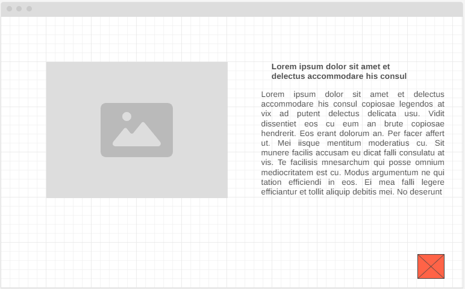
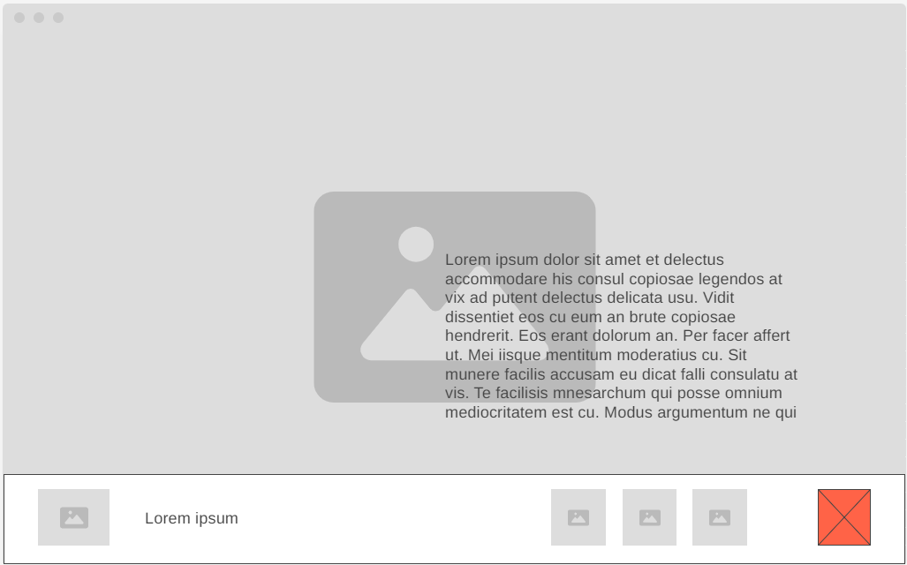
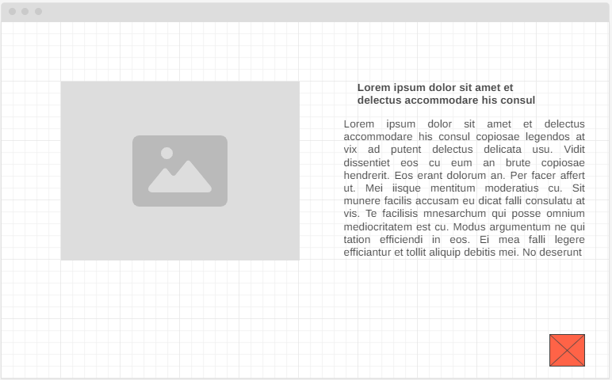
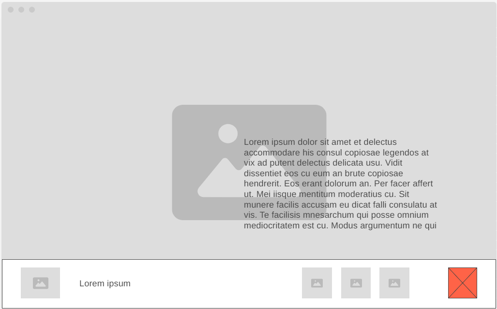

Overview
Purpose
The purpose of this site is to help students learn about rafting by sharing information about different parts of a possible plan, including rivers and camping ideas.
Audience
The audience are the students in the WDD130 class who are looking for activities to do in Rexburg Idaho with the ope of replacing the usual plans, accesing the site form their laptop.
Branding
Website Logo

Style Guide
Color Palette
| Primary | Secondary | Accent 1 | Accent 2 |
|---|---|---|---|
| abc4f3 | D8E2DC | ebe4b0 | efe0ce |
Typography
Heading Font: Teko
Paragraph Font: Poetsen One
Normal paragraph example
The best Whitewater Rafting in Colorado, White Water Rafting Company offers rafting on the Colorado and Roaring Fork Rivers in Glenwood Springs. Since 1974, we have been family owned and operated, rafting the Shoshone section of Glenwood Canyon and beyond.
Colored paragraph example
Trips vary from mild and great for families, to trips exclusively for physically fit and experienced rafters. No matter what type of river adventures you are seeking, White Water Rafting Company can make it happen for you.
Navigation with Hover
Site Map
Wireframes
Home Example

Page 2
 


